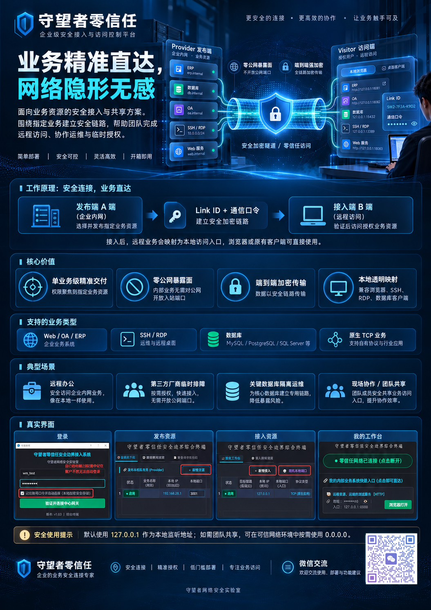

单业务精确发布
以指定业务 IP 与端口为交付单位，控制访问范围。
面向业务资源的安全接入与共享平台。发布指定内网服务，为授权人员建立独立的业务访问通道。
资源发布与接入统一管理。Windows 客户端 v1.03 已发布，安装包包含本机网络助手及配套使用文档。
将访问能力精确交给获授权的用户，同时保持企业现有应用的工作方式。
以指定业务 IP 与端口为交付单位，控制访问范围。
终端登录与资源授权分层管理，Link ID 与通信口令相互配合。
内部业务不必配置公网入站端口，降低公网扫描直接触达的机会。
Web、SSH、RDP 和数据库客户端继续使用熟悉的工具。
发布资源、交付凭证、建立本地映射，按流程完成远程业务访问。
指定实际可达的内部 IP:Port，设置业务名称与授权凭证。
192.168.28.1:3001将同一业务对应的资源级凭证安全交付给指定人员。
资源级凭证 · 仅示意创建本地端口映射，通过浏览器或原生客户端访问。
127.0.0.1:8888示例来自用户使用说明书，仅用于说明资源发布与本地映射关系。
覆盖远程办公、临时协作、数据库运维和外勤共享。
以本地地址访问 ERP、OA、知识库等内部业务。
为临时排障发布单个业务端口，结束后及时撤销。
数据库工具访问映射端口，减少直接暴露公网的需求。
受控局域网内按需开启共享监听，支持团队协作。
一张海报了解产品功能，也可以下载完整演示文稿。

海报汇总了业务资源发布、Link ID 授权、远程接入与本地映射的使用方式，同时展示客户端实际操作界面。